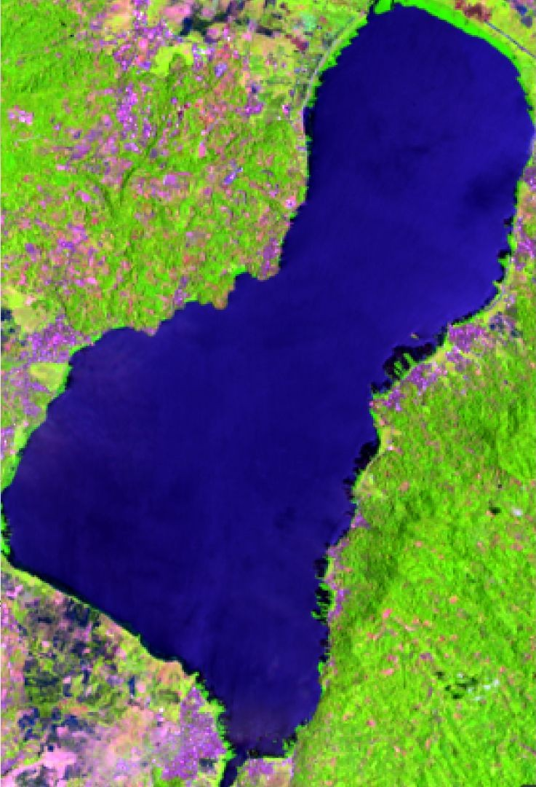
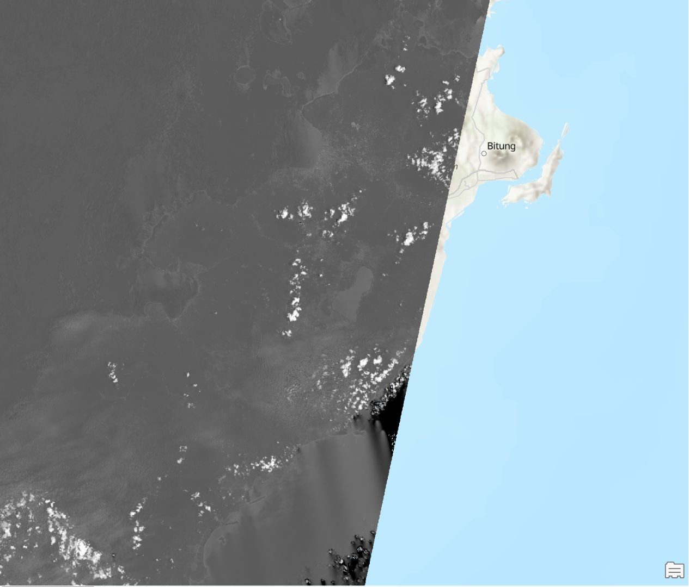
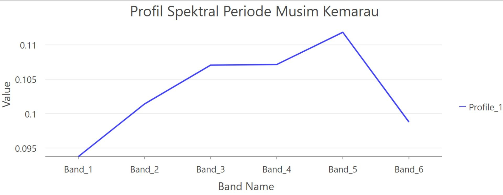
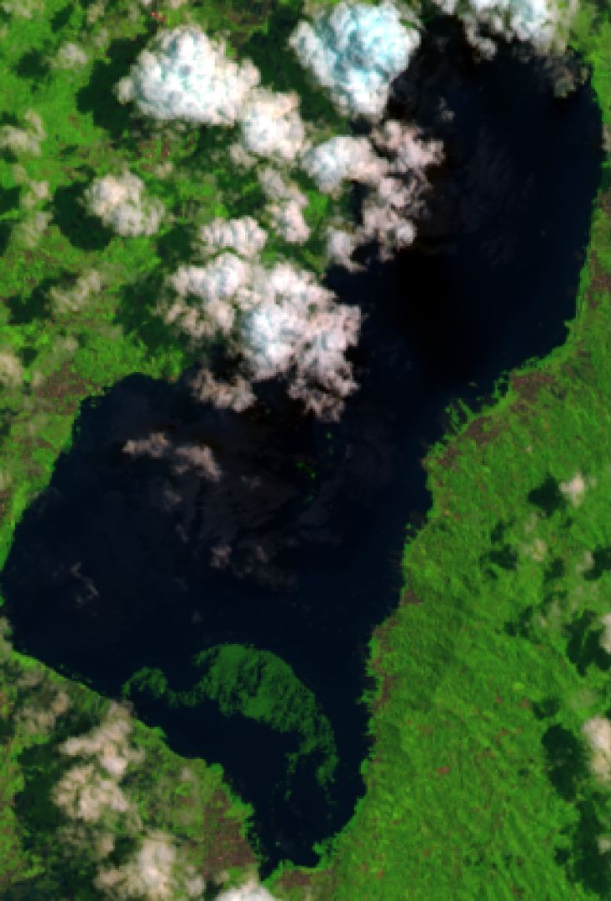
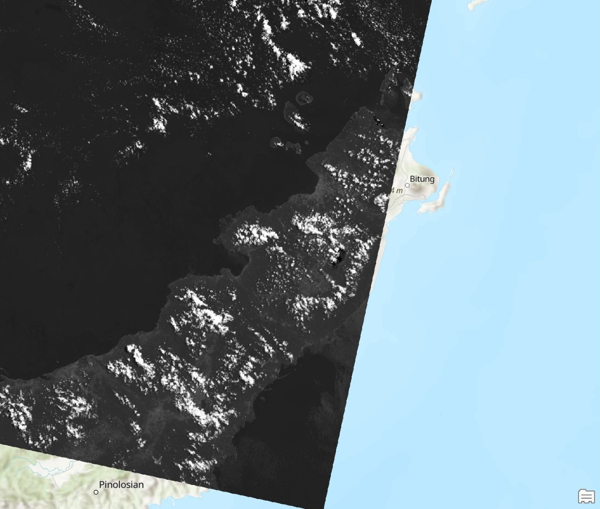
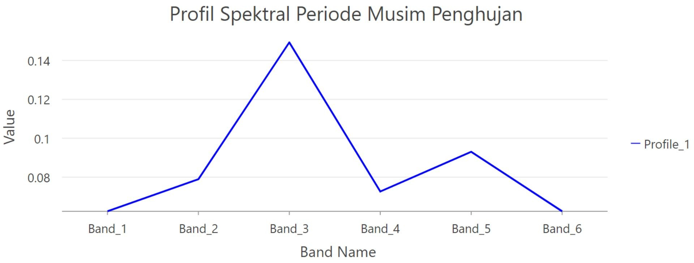

Pemanfaatan Metode Atmospheric Correction dalam Pengujian Kualitas Air di Danau Tondano, Sulawesi Utara
Latar belakang
Danau Tondano adalah danau yang cukup luas di ujung utara Pulau Sulawesi. Luasnya membuat danau ini cocok dipantau dengan penginderaan jauh, karena kondisi perairannya dapat diamati sekaligus dari citra satelit tanpa harus mengukur langsung di lapangan. Namun, citra satelit tidak selalu menggambarkan kondisi permukaan danau apa adanya. Sebelum sampai ke sensor, cahaya yang dipantulkan danau harus melewati atmosfer, dan partikel serta gas di udara menimbulkan distorsi pada nilai yang terekam. Koreksi atmosferik dilakukan untuk meminimalkan gangguan tersebut agar interpretasi citra lebih akurat.
Penelitian ini memanfaatkan koreksi atmosferik pada citra Landsat 9 untuk membandingkan kondisi dan kualitas air Danau Tondano pada musim kemarau dan musim hujan, berdasarkan tampilan citra dan profil spektralnya.
Data yang digunakan
| Data | Format Data | Jenis Data | Sumber |
|---|---|---|---|
| Landsat 9 OLI/TIRS C2 Level 2, 24 September 2023 (musim kemarau), path 112 row 059 | Raster (GeoTIFF) | Sekunder | USGS Earth Explorer |
| Landsat 9 OLI/TIRS C2 Level 2, 19 April 2023 (musim hujan), path 112 row 059 | Raster (GeoTIFF) | Sekunder | USGS Earth Explorer |
| Polygon batas Danau Tondano | Vektor | Hasil digitasi | ArcGIS Pro |
Kedua citra dipilih setelah cloud cover diperiksa, lalu band 2 sampai 7 dipakai untuk pengolahan.
Metode
Pengolahan dilakukan di ArcGIS Pro (dan direplikasi dengan Python). Tahapannya sebagai berikut.
| Tahap | Keterangan |
|---|---|
| 1. Konversi DN ke reflektan | ρλ' = Mρ · Qcal + Aρ, dengan Mρ dan Aρ dari metadata (REFLECTANCE_MULT/ADD_BAND_x) |
| 2. Koreksi sudut matahari | ρλ = ρλ' / sin(θSE), dengan θSE adalah sun elevation saat perekaman |
| 3. Composite band | Band 4, 3, 2 sebagai RGB true color |
| 4. Clip | Pemotongan dengan polygon Danau Tondano hasil digitasi |
| 5. Spectral profile | Membaca nilai reflektan per band untuk menafsirkan kondisi air tiap musim |
Hasil
Citra sebelum koreksi tampak abu-abu dan kurang informatif, sedangkan setelah koreksi dan composite, kenampakan danau terlihat lebih jelas (klik gambar untuk memperbesar).
Musim kemarau (24 September 2023)



Pada musim kemarau danau tampak lebih terang. Kondisi ini mengindikasikan penurunan debit air dan konsentrasi partikel tersuspensi yang relatif lebih rendah. Profil spektralnya memuncak di band 5 (NIR), yang sensitif terhadap kelembaban sehingga kelembaban tanah dan vegetasi di sekitar danau ikut memengaruhi respons spektral.
Musim hujan (19 April 2023)



Pada musim hujan danau tampak lebih gelap. Curah hujan yang lebih tinggi diduga membawa lebih banyak sedimen, partikel padat, dan material organik ke danau, sehingga kekeruhan meningkat dan kualitas air cenderung menurun. Profil spektralnya memuncak di band 3 (hijau), yang konsisten dengan dugaan adanya material tersuspensi dan organik terlarut.
| Aspek | Musim kemarau | Musim hujan |
|---|---|---|
| Tampilan danau | Lebih terang | Lebih gelap |
| Puncak spectral profile | Band 5 (NIR) | Band 3 (Green) |
| Dugaan kondisi air | Partikel tersuspensi lebih rendah | Sedimen dan bahan organik lebih tinggi |
Kesimpulan
Koreksi atmosferik pada citra Landsat 9 memperjelas visualisasi Danau Tondano dan memungkinkan perbandingan kondisi antar musim. Pada musim kemarau, danau tampak lebih terang dengan respons spektral dominan di band 5, sedangkan pada musim hujan danau tampak lebih gelap dengan respons dominan di band 3, yang mengindikasikan meningkatnya kekeruhan akibat partikel padat dan bahan organik. Interpretasi ini masih bersifat indikatif dan perlu diperkuat dengan indeks seperti NDTI atau data pengukuran lapangan.
← View other projects